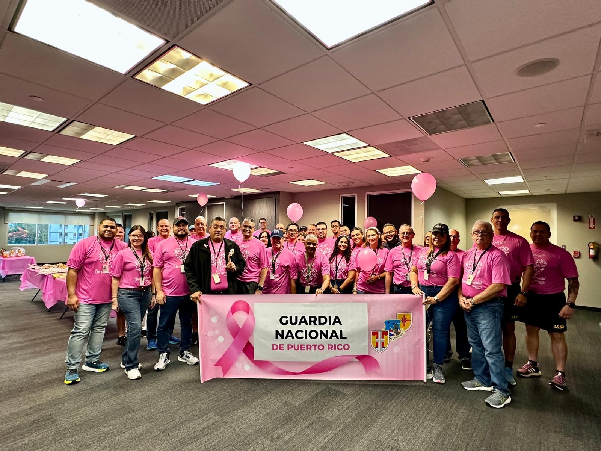
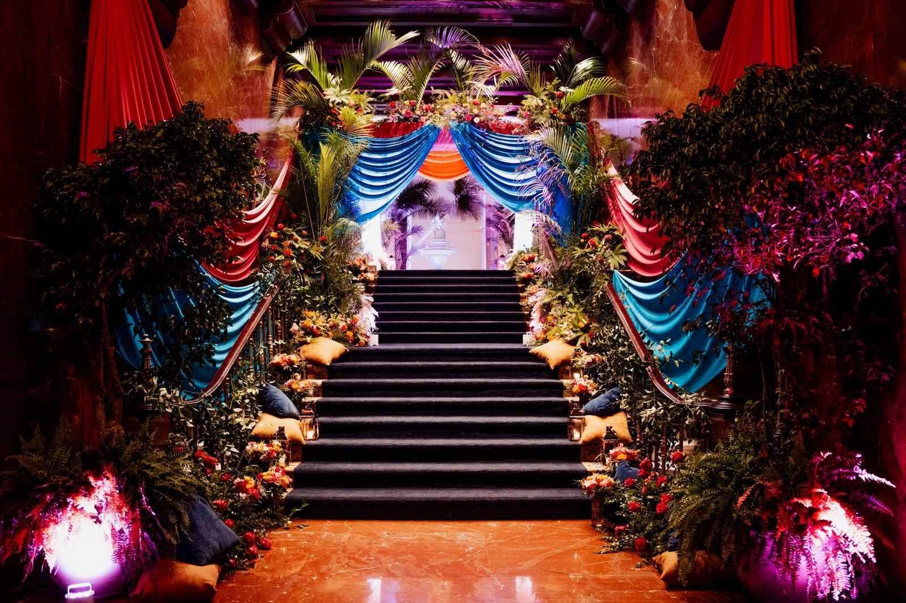

Puerto Rico · Desde 2003
Contigo,hacia adelante.
Educación, cernimiento, ayuda para tratamiento y apoyo para sobrevivientes en los 78 municipios. Nadie debería enfrentar el cáncer de seno sola.

Presentes en toda la Isla
Puerto Rico, pintado de rosa.
¿Cómo te ayudamos hoy?
Empieza por aquí.
Necesito ayuda
Mamografías, diagnóstico y asistencia para tratamiento sin costo, según tu municipio.
Buscar serviciosQuiero aprender
Señales de alerta, factores de riesgo y qué preguntarle a tu médico.
EducaciónQuiero ayudar
Únete a la familia de voluntarios Komen en educación, eventos y comunidad.
Ser voluntarioSoy sobreviviente
Recursos para cada etapa: diagnóstico, tratamiento, sobrevivencia y familia.
Ver recursosNuestro impacto
Lo que logramos juntos.
Cada inscripción, camiseta y donación se convierte en servicios para personas reales en nuestra Isla.
El cáncer de seno es el cáncer más diagnosticado en la Isla.
Tu donación financia mamografías, biopsias, quimioterapia, transportación y grupos de apoyo a través de organizaciones aliadas en todo Puerto Rico.
Otras formas de apoyarEventos
Celebramos la vida en grande.

Race for the Cure® 2026
“En cada paso, juntos por ti.” Miles celebramos a las sobrevivientes en el Coliseo José Miguel Agrelot.
Ver resultados
Pink Day
Tu oficina, escuela o agencia se viste de rosa por un día para educar y recaudar fondos.
Únete al Pink Day
Pink Gala
Nuestra noche más elegante del año. En 2026 viajamos a “Las Mil y Una Noches”.
Ver memoriasMomentos
Una isla vestida de rosa.
Fotos de nuestra comunidad en el Race for the Cure, el Pink Day y la Pink Gala. Toca cualquier foto para verla en grande.
Sobrevivientes
Cada sobreviviente merece sentirse acompañada, celebrada y respaldada en cada paso de su camino.
Ya sea que te acaban de diagnosticar, estés en tratamiento o acompañes a un ser querido, tenemos recursos y asistencia para ti.
Boletín
Mantente informada.
Recibe fechas de eventos, clínicas de mamografías y noticias de Komen Puerto Rico.
Sin spam. Puedes darte de baja cuando quieras.